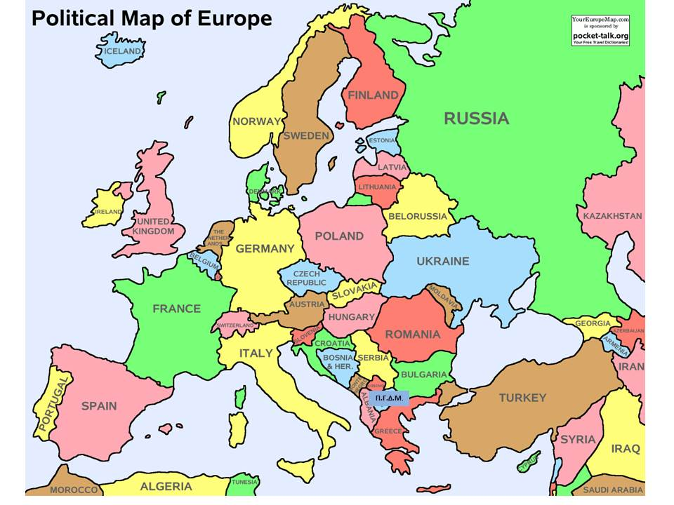

Ευρώπη

Εργασία του Μάξιμου Αϊβατίδη με θέμα την ευρώπη
Έτος 2022-23
2ο Επαλ Χαλανδρίου
Πληροφορίες για Ποδοσφαιρικές Ομάδες της Ευρώπης
Το Ευρωπαϊκό Πρωτάθλημα Ποδοσφαίρου (αγγλικά: UEFA European Championship), γνωστό ως Euro, είναι η ευρωπαϊκή ποδοσφαιρική διοργάνωση, στην οποία διαγωνίζονται οι εθνικές ομάδες ανδρών των μελών της UEFA προκειμένου να καθοριστεί ο πρωταθλητής της Ευρώπης. Διεξάγεται κάθε τέσσερα χρόνια από το 1960, στις ζυγές χρονιές μεταξύ των Παγκοσμίων Κυπέλλων Ποδοσφαίρου, και στην αρχή ονομαζόταν UEFA European Nations' Cup προτού αλλάξει στο σημερινό του όνομα το 1968. Ξεκινώντας από το πρωτάθλημα του 1996, ορισμένα πρωταθλήματα αναφέρονται συχνά με την μορφή "UEFA Euro [χρονιά]" και αυτή η μορφή έχει από τότε εφαρμοστεί και στα προηγούμενα πρωταθλήματα.
- Bayern München
- Liverpool
- Manchester City
- Real Madrid
- Chelsea
- FC Barcelona
- Paris Saint-Germain
- Juventus
- Atlético Madrid
- Manchester United